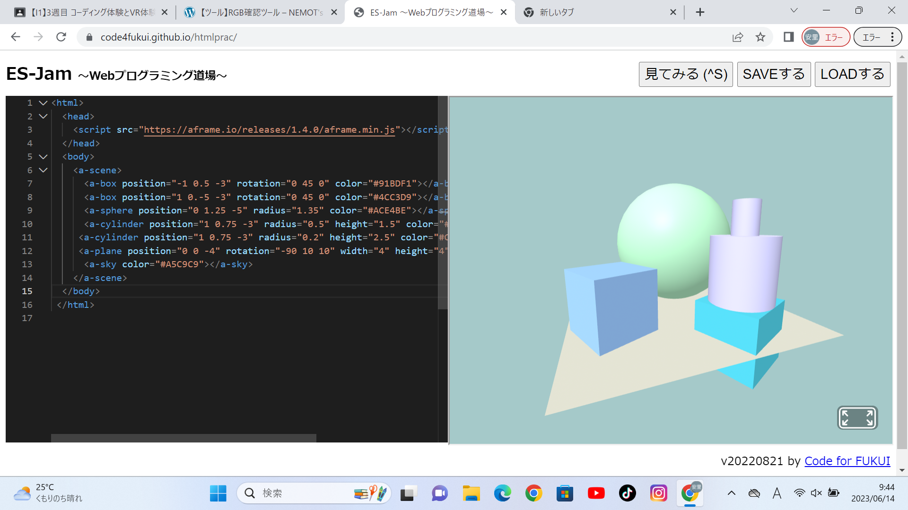
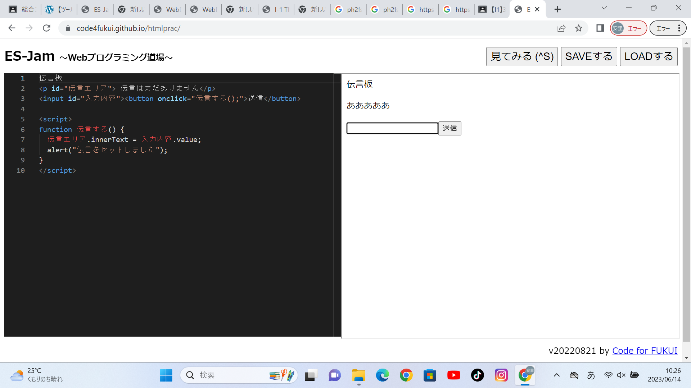

第3週目
3-1 JavaScript体験：VR空間を作る

自作した３次元空間
1.内容
A-Flameからプログラムをコピーしてプログラミング道場にペーストして、数値などを自分で変えて立体の位置や大きさなどをかえた。また、RGB確認ツールを使って色のコードを調整して
立体を自分の好きな色に変えた。
2.感想
3-2 JavaScript体験：伝言プログラムを作る

伝言板
1.内容
プログラミング道場で伝言板を作った。新しい伝言を書いたら、伝言が上書きされる仕組みになっている。
2.感想
ブロックで組み立てるプログラミングではなく、文字のプログラミングは、少しでも打ち間違えていたら動かないので、打ち間違えないように気を付けないといけないと思いました。
3-3 JavaScriptプログラムの３次元空間の体験
1.内容
VRゴーグルをつけて、仮想空間に入ってコントローラーで操作して立体を動かしたり、ボールを出したりして三次元空間を体験した。
また、ワープして自分の位置を変えることもできた。
2.感想
ボールを飛ばしたらボールが立体にぶつかって跳ね返っていて、本当にそこに立体があるような感じがしました。自分が作った三次元空間に入ることが出来て楽しかったです。